<p-menubar [model]="items" [ngStyle]="{backgroundColor:''}">
  <ng-template pTemplate="start">
      
  </ng-template>
  <ng-template pTemplate="end" >
    <button (click)="logout()" pButton icon="pi pi-power-off" pTooltip="Cerrar sesión" tooltipPosition="bottom" ></button>
  </ng-template>
</p-menubar>

<router-outlet></router-outlet>

<div class="logo-cubikar-background" >
  
</div>
<div style="background-color: rgba(165, 182, 179, 0.29); height: 136vh; color: rgb(239, 237, 237)">

</div>
<!-- </ion-header> -->


